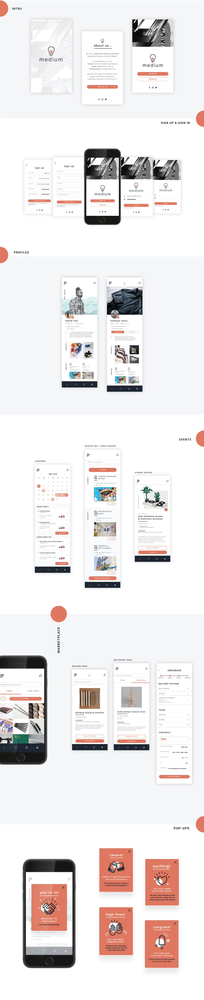

The idea for Medium arose from my personal experiences with other design-oriented interfaces such as Behance and Dribble, and my desire to create an application that further encourages creatives to openly support one another and give back to their
artistic community.
Medium is a mobile application designed specifically for creatives to connect, collaborate, organize different types of creative/artistic events, as well as share donate/share resources. The interface is dedicated to creating
a stronger sense of community and encouraging more connection between individuals in the creative field.
A primary focus of my application was equity (through the donating feature) and thus, it was important for me to find ways to engage my users emotionally: I needed to incentivize my audience to donate resources through positive
reinforcement. I applied emotional design principles by creating various pop-ups, which appear after any significant interaction between the user and the application. For example, pop-ups appears after the user creates their profile, purchases
or donates their first item, creates their first event, etc.
